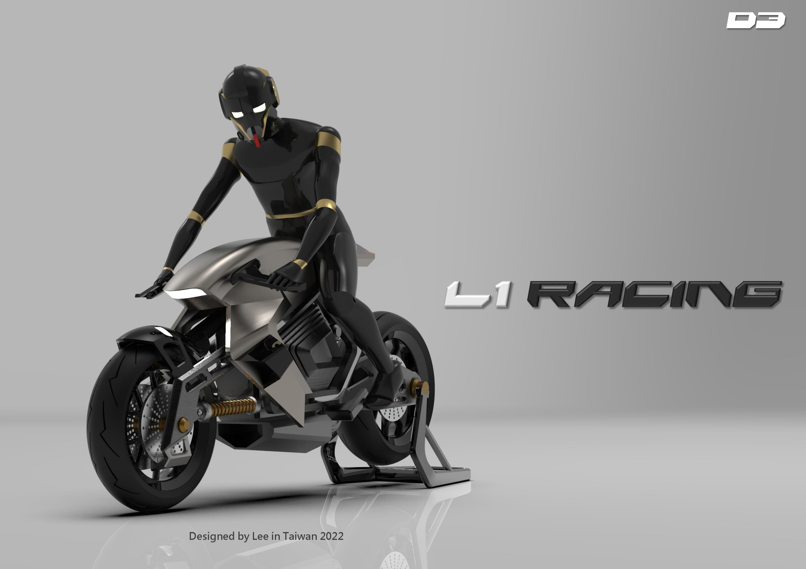

Crafting form, logic, and digital systems.
研究生與獨立設計師，專注於複雜曲面工藝、人因工程結構與現代化前端互動體驗。
Selected Projects

MASK
2022 疫情期間設計的賽博龐克風格防護面罩，整合雙環形呼吸閥、主動式通風結構與模組化濾網替換機能，兼顧防護、舒適與前衛美學。

L1 RACING
融合賽車曲面與 Café Racer 結構，運用 Rhinoceros 雕琢的流線幾何與散熱設計。

Gain Support Device
針對現代職場人因工程與脊椎健康危害所開發的輕量化外骨骼腰部輔具。

Floating Life
新一代設計展空間策展與全套視覺識別規劃，探討空間動線與秩序美學。